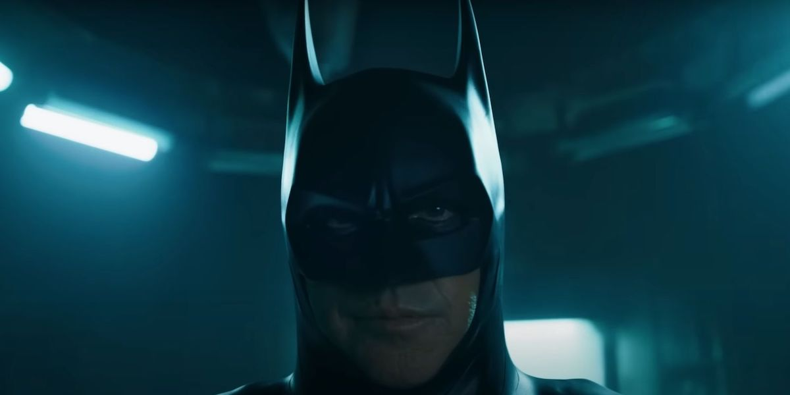

Uomo-Pistrelo è un film adattato ad fumetto comico e raffigura il nostro personaggio principale (L'uomo-pistrelo)
che deve picchiare i criminali utilizzando i suoi fortissimi possenti poteri. Seguitelo alle 13 al cinema (non so quale).
Personaggi Principali Del Film
| Uomo-Pistrelo | Il Joker | DIO Brando!!!11!!!1 |
|---|---|---|
|  |  |
|
|
L'Uomo-Pistrelo(o anche chiamato batman dai fan) è il personaggio principale della saga BatBoy. Esso è stato morso da un pipistrelo e quindi ha ottenuto i suoi poteri. ah e gli son morti i genitori... forse. |
Il Joker è uno dei supercattivi se non il supercattivo più importante della saga di BatBoy. Eterno rivale dell'Uomo-Pistrelo e psicopatico professionale. E' anche un pagliaccio e fa ridere gli orfani. |
Dio Brando è il rivale principale del'Uomo-Pistrelo nella prima stagione dove L'Uomo-Pistrelo viene attaccato da questo vampiro. Riempito di odio giura vendetta contro L'Uomo-Pistrelo |